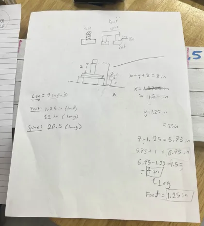
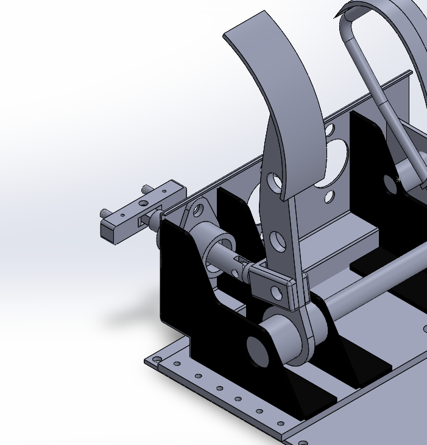

Category: Mechanical Design / Vehicle Systems / Braking
Mass Mileage Brake System Integration
Designed a lightweight braking solution for the UMass Mass Mileage ultra-efficient vehicle (Shell Eco-marathon), integrating bicycle disc brake hardware with the vehicle’s wheel and pedal assembly. Worked in a team of four to develop the concept, model the mechanism, and ensure reliable braking with minimal added weight and size.
Gallery

Concept sketch & packaging
Early layout sketches used to define mounting locations, clearances, and target dimensions before CAD modeling.

Brake system CAD integration
CAD assembly showing how the brake design integrates with the pedal mechanism and activates the hydraulic system.
Overview
- Goal: Design a reliable, lightweight brake system for an ultra-efficient vehicle competing in Shell Eco-marathon.
- Constraints: Tight wheel packaging, low mass, minimal drag, simple manufacturable components, and safe braking.
- Team: Collaborated with 3 teammates (team of four total).
- My role: Concept development, CAD modeling, fit/clearance checks, and design iteration.
- Approach: Requirements → concept sketches → CAD integration → iterative refinement.
What I Learned
- Translating early sketches into constrained CAD assemblies with realistic mounting and tolerances.
- Integrating off-the-shelf bicycle brake components into a custom vehicle system.
- Iterating quickly based on fit, clearance, and functional constraints.
- Improving collaboration and feedback integration within a mechanical design team.
Tools & Skills
SolidWorks
Mechanical Design
CAD Assembly
DFMA
Clearance Analysis
Team Collaboration
Results
- Designed an integrated brake system mounting bicycle disc brake hardware onto the Mass Mileage pedal assembly.
- Developed a lightweight bracket and linkage mechanism to actuate hydraulic braking.
- Produced a CAD assembly suitable for prototyping, manufacturing review, and future testing.